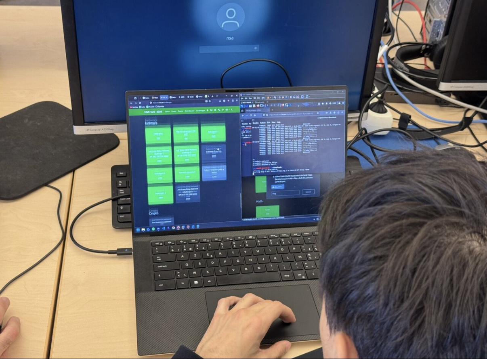
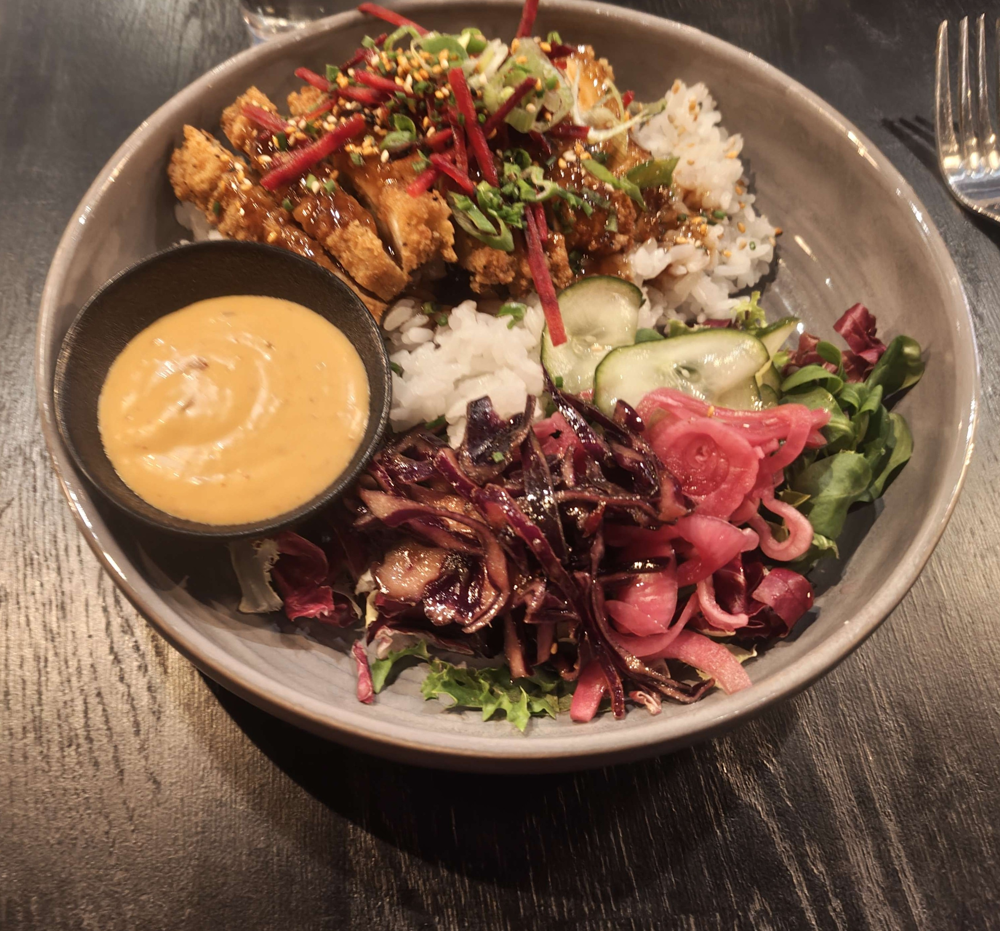
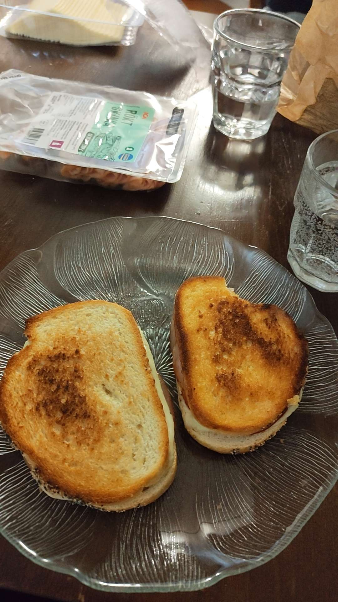
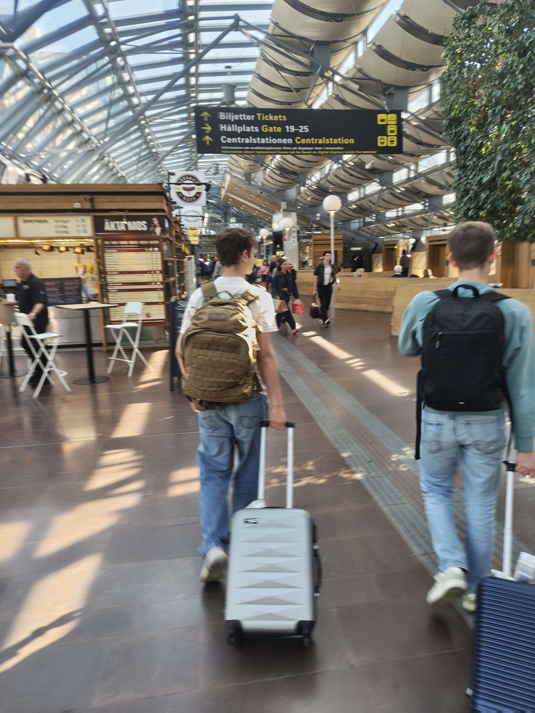

Project Objective
The objective of our project week was less about delivering a final product and more about the experience itself. Instead of a traditional assignment, we collaborated with Skövde University students on a week-long series of engaging CTF challenges.
Our group was actually separated into different teams during the project week. However, this only helped us further because everyone had different experiences to talk about.
Teamwork was essential: there was a huge variety of challenges, which meant we had to combine our diverse strengths to compete, making it a great way to get to know each other. In this blog, we’ll walk you through a chronological timeline of our project week, along with a few extras like a visual map of the city.
Day 1 - Start of the CTF week
Written by: Joachim Carpels
On Monday, the project officially kicked off. We started the day with a short introduction where we got to know some of our fellow students. After that, we met our teams and began collaborating on the project until around 4 PM.

At noon, we went out for sushi together with the local students, which was a great opportunity to connect and spend time together outside of the project work.
In the evening, we had our first social activity: a board game night. Before and after playing the board games, we spent time talking, having drinks, and getting to know everyone better. It was a fun and relaxed way to end the first day of the project.
Day 2 - Continuation of the CTF week and movienight
Written by: Andres De Coninck

After the amazing first day Monday was, we woke up fresh and early to start the second day of this project week. We went to the classroom pretty early to set up our laptops and be ready when the new challenges dropped.
Although collaborating was not allowed, we could always rely on other groups to help us with technical issues, problems, or any questions whatsoever. Every group had the perfect blend of Howest students and Skövde University students; everybody got along very well.

After some great hours of competitiveness, this is what the scoreboard looked like, with the amazing 'apt install braincell' in first place. Shortly after, we went out to explore the city for some food.
With our bodies and minds full of new energy, we went back to the classroom to keep working on the challenges we weren't able to solve in the morning. It was nice to see that there was a lot of variety in the challenges themselves, from IRL challenges to cryptography. Sadly, there was no reverse engineering, as the Skövde University students did not have any hands-on experience with this.

To end the day, we joined the movie night at the university and watched WarGames (1983), a classic cyber movie about a teenager who accidentally accesses a military system and nearly starts a nuclear conflict. It was the perfect way to wrap up a long day of CTF challenges, teamwork, and problem solving

Since the movie night was optional, some of us also took the chance to explore more of Skövde in the evening and enjoy the good weather.
Day 3 - More fun challenges and exploring the city at night
Written by: Kiandro Baeckelandt
By Wednesday, the team had truly found its rhythm. We spent the morning back at the university, where a fresh batch of Capture The Flag challenges had just been released.

For lunch, we returned to the sushi restaurant we had visited on Monday, since the food there had been excellent. This time, however, we were curious to try something different from the menu. Therefore, we ordered chicken katsu: crispy breaded chicken served with rice and a rich, savoury sauce. It quickly became one of the culinary highlights of the trip.
After an afternoon of solving more CTF challenges, we were ready for the evening activity: a pub night. Before heading out, however, we stopped by Systembolaget, the state-owned liquor store, to buy a few drinks for predrinking at our accommodation. Beer prices in Swedish bars are remarkably high, and although the student café charged less than a regular bar, the cost still added up quickly.
Once we felt ready, we walked over to a local student café. The atmosphere there was relaxed and welcoming, and we spent a couple of hours chatting and enjoying the company of the other students. Unfortunately, the café closed at 11 PM, so we decided to continue our evening in the city centre.
Downtown, however, the mood shifted noticeably. A large group of off-duty soldiers was present, and although we tried to keep to ourselves, the situation gradually became uncomfortable. Out of caution, we chose to leave early and walk back to our accommodation together as a group.
Day 4 - Grinding CTF again
Written by: Rubeen De Roose
ToDo
Day 5 - Who will win?
Written by: Noah Defruyt
ToDo
Day 6 - Goodbye Sweden
Written by: Jonas D'hont

We woke up at around 10 AM and made some grilled cheese sandwiches for breakfast.

Two people from our group went to a candy store to buy sweets for their mothers. Since it was Mother’s Day the next day, they thought it would make a nice gift.

Around noon, we grabbed a small snack at the train station before taking the train to Gothenburg.
From there, we took an Uber to the airport and waited for our flight home.
Reflection
After everything was said and done, our project week had come to an end. Looking back, every single one of us had an amazing experience throughout the whole week. Whether it was solving challenges, eating good food, drinking an overpriced pint (8 euros, by the way!), or simply chatting with our newly made friends, it was unforgettable.
What stood out most was how welcome everyone felt from start to finish. Across the whole group, we made many new friends and created memories that will stay with us long after this trip.
We actually learned a lot of new things from the Swedish students, just as they learned a lot from us. To sum up this project week: we don't just think it was a successful and productive week, we know it was.